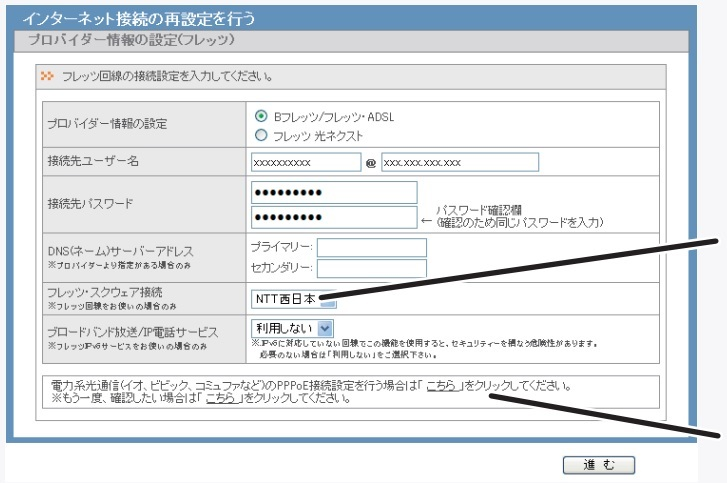

| TOP | weblog | TIPS | Works | リンク |
| 2013-05-15 NEC Aterm WD701CV と BUFFALO WHR-G301N/N の接続 ADSLモデムの「NEC Aterm WD701CV」と無線LANブロードバンドルーター「BUFFALO WHR-G301N/N」の接続についての解説です。 「NEC Aterm WD701CV」に拡張カード「WL54AG」を差し込むと無線LAN接続が可能ですが、これはないもののします。（ここのページの一番の写真をご覧ください、もし拡張カードが刺さっていれば話は大きく変わります） どのメーカーの無線LANルーターでも、どのメーカーのADSLモデム、光VDSLモデムと接続することが出来ます。 ブロードバンドルーター導入で一番トラブルのは導入時に配布された接続情報（IDとかパスワード）が記載された紙を紛失してしまって繋げられない事です。 「BUFFALO WHR-G301N/N」フレッツADSLの設定画面は以下の様ですが、これらの情報を紛失していますと接続できません。 （らくらくセットアップシート Windows編 より抜粋）  ここさえクリアできれば接続は簡単です。 Q1.子機は必要ですか？ Acer Aspire E1-531-H14Cは無線LANが標準で搭載されているようなので購入は不要です。 「スペック」の「Wi-Fi 通信規格 IEEE 802.11a/b/g/n」がそれです。 もう一台のPCは何か分かりませんがメーカーのホームページで無線LANが搭載されているか確認してください。 搭載されていなければ購入の必要があります。 Q2.パソコン２台、プリンター（EPSON PM-A890)を無線で繋ぎたい 無線プリントサーバーを購入しなければ全て無線で接続することは出来ません。 例えば「BUFFALO LPV3-U2-G54」、以下のようなネットワーク構成となります。 どこでもプリンタが置けるメリットは大いにありそうですがプリントサーバーは余り流行っていません、使っている人少ないです。 「そこまでして...」と言うことですじゃないでしょうか？
無線プリントサーバーを使用しないでネットワークを組む場合は下図のようになります。 PC-01とPC02でワークグループネットワーク（WIndows8ではホームグループと呼びます）を組む必要があります。 互いのログインIDとワスワードを同じにする事とプリンターの共有設定でPC01からPC02を経由して印刷することが可能です。 PC01とPC02がこっとなるバージョンのWindowsだとちょっと厄介です、知識ゼロから以下のネットワークを組むのは結構しんどいでしょう。
Windows8は無線LAN接続の機能が最少から搭載されています。 タスクバーの丸印をクリックすると無線アクセスポイント（無線LANブロードバンドルーターの無線機能の事、以降「AP」と表記）が表示されるので、自分のAPをクリックしてパスワードを入力すると接続完了です。
「AIR-FORCE-SEVEN、NINE」が僕の家のAPです。 一旦切断して、接続までの手順を紹介しましょう。
AIR-FORCE-ONEはEMOBILEの無線インターネットアダプタですがAPの機能も搭載しているので画面に表示されます。 勿論「AIR-FORCE-ONE」に直接接続できるのだけど複数接続すると極端に性能が落ちるので繋げてません。 我が家のネットワークは結構複雑でして機会があれば紹介しようと思います。 無線ＬＡＮの厄介なところは「リモートメンテナンス」が出来ない事です。 TermViewer8のリモート操作はインターネット接続されていることが前提なので「無線LANが繋がらない」からと言っても、繋がってないからリモートメンテナンス出来ないのです。 ですから頑張って自分で繋げてください。 (余談） 光が届かないエリアは実はまだ随分多くて、田舎でになればなるほどカバー率は下がるようです。 ８か月しか住んでいませんでしたけど静岡県伊豆の国市も私が住んでいた処は入居当初光は来てませんでした。 入居後２カ月ほどしてフレッツ光がカバーされましたけど工事費が２万円もかかるということで、あまりにもバカらしくてEMOBILEの無線インターネットを使い続けています。 今年で４年目かな？ そんなことでブロードバンドルーターの設定は長い間行ってません。 |
{kind=link}